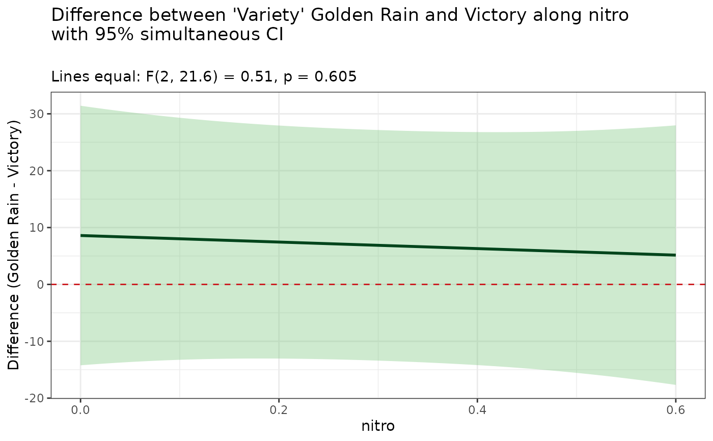

The results of covariatemeans and semipred hold their tables in the layout of
predictmeans: means (one row per point of a curve or surface), slopes
(semipred(deriv = )) and, with contr, pairs (the difference of two curves at each
covariate value), with the same column names (estimate, std.error, df, conf.low,
conf.high, ...) and the covariates under their own names. tidy() and as.data.frame() return
them, autoplot.pm_curves draws them and print() shows a short summary.
Usage
# S3 method for class 'pm_curves'
tidy(x, what = c("means", "pairs", "slopes"), ...)
# S3 method for class 'pm_curves'
as.data.frame(x, row.names = NULL, optional = FALSE,
what = c("means", "pairs", "slopes"), ...)
# S3 method for class 'pm_curves'
print(x, n = 10, digits = 4, ...)Arguments
- x
A result of
covariatemeansorsemipred.- what
Which table:
"means","pairs"or"slopes". The default is the one the result has ("pairs"for a result withcontr,"slopes"forsemipred(deriv = 1)).- row.names
Optional row names for the result.
- optional
Not used.
- n
The number of rows printed.
- digits
Significant digits printed.
- ...
Not used.
Value
tidy() and as.data.frame(): a data frame with unrounded values. In every table
conf.low and conf.high are pointwise limits (t with the row's df); with
band = "simultaneous" the simultaneous band is in adj.conf.low and adj.conf.high, with
p.adj where there is a test (Scheffe over the covariate values for covariatemeans(), the simulated
maximum for semipred(); the adjusted p-value is below level exactly where the band leaves out zero,
up to the resolution of the 10000 draws for semipred()). Columns beginning response are the same
quantities on the response scale (back-transformed limits for means, delta-method limits for differences).
meansThe factor columns of
modelterm, the covariate(s),estimate,std.error,df,conf.low,conf.high(the model scale: the link, or the transformed response) and, when the curves are back-transformed,response,response.std.error(delta method),response.conf.low,response.conf.high.slopes(
semipred(deriv = 1, 2)) The same columns for the slopes (curvatures) on the model scale, withstatistic(t) andp.valueof slope = 0.pairslevel1,level2, the covariate(s),estimate(level1minuslevel2on the model scale),std.error,df,statistic(t),p.value,conf.low,conf.high;ratioorodds.ratiowith their (pointwise) limits for a log or logit scale; andresponse,response.std.error,response.conf.low,response.conf.high, the difference of the back-transformed curves.
settings (a list in the result) records modelterm, covariate, level,
contrast, band, df_method, vcov_adjust, vcov, back_transform,
test (covariatemeans(): the joint F test that the two curves are the same, with the columns of
pm_joint: df1, df2, F.ratio, p.value), for
semipred() also deriv, unconditional and boundary, then component
(zero-inflated glmmTMB fits), model_class and version. significant (in the result)
holds the ranges of the covariate where the band asked for leaves out zero.
Examples
library(predictmeans)
data(Oats, package="nlme")
fm <- lme(yield ~ nitro*Variety, random=~1|Block/Variety, data=Oats)
cm <- covariatemeans(fm, "Variety", covariate="nitro", at=c(0, 0.3, 0.6))
cm
#> Curves of 'Variety' along nitro
#> 95% limits; Kenward-Roger df
#> Variety nitro estimate std.error df conf.low conf.high
#> Golden Rain 0.0 81.90 8.571 12.849 63.36 100.44
#> Golden Rain 0.3 104.50 7.797 8.869 86.82 122.18
#> Golden Rain 0.6 127.10 8.571 12.849 108.56 145.64
#> Marvellous 0.0 90.42 8.571 12.849 71.88 108.95
#> Marvellous 0.3 109.79 7.797 8.869 92.11 127.47
#> Marvellous 0.6 129.17 8.571 12.849 110.63 147.70
#> Victory 0.0 73.30 8.571 12.849 54.76 91.84
#> Victory 0.3 97.62 7.797 8.869 79.95 115.30
#> Victory 0.6 121.95 8.571 12.849 103.41 140.49
#> autoplot(x) draws the plot (layouts: ?autoplot.pm_curves).
as.data.frame(cm)
#> Variety nitro estimate std.error df conf.low conf.high
#> 1 Golden Rain 0.0 81.90000 8.570714 12.849071 63.36196 100.43804
#> 2 Golden Rain 0.3 104.50000 7.797492 8.869185 86.82111 122.17889
#> 3 Golden Rain 0.6 127.10000 8.570714 12.849071 108.56196 145.63804
#> 4 Marvellous 0.0 90.41667 8.570714 12.849071 71.87863 108.95470
#> 5 Marvellous 0.3 109.79167 7.797492 8.869185 92.11278 127.47056
#> 6 Marvellous 0.6 129.16667 8.570714 12.849071 110.62863 147.70470
#> 7 Victory 0.0 73.30000 8.570714 12.849071 54.76196 91.83804
#> 8 Victory 0.3 97.62500 7.797492 8.869185 79.94611 115.30389
#> 9 Victory 0.6 121.95000 8.570714 12.849071 103.41196 140.48804
cd <- covariatemeans(fm, "Variety", covariate="nitro", contr=c("Golden Rain", "Victory"),
band="simultaneous")
head(as.data.frame(cd))
#> level1 level2 nitro estimate std.error df statistic
#> 1 Golden Rain Victory 0.00000000 8.600000 8.684675 21.57463 0.9902501
#> 2 Golden Rain Victory 0.01224490 8.529592 8.567346 20.58274 0.9955932
#> 3 Golden Rain Victory 0.02448980 8.459184 8.453378 19.63655 1.0006868
#> 4 Golden Rain Victory 0.03673469 8.388776 8.342908 18.73711 1.0054977
#> 5 Golden Rain Victory 0.04897959 8.318367 8.236078 17.88507 1.0099913
#> 6 Golden Rain Victory 0.06122449 8.247959 8.133030 17.08077 1.0141311
#> p.value p.adj conf.low conf.high adj.conf.low adj.conf.high
#> 1 0.3330287 0.6191041 -9.431525 26.63152 -14.22282 31.42282
#> 2 0.3310090 0.6162890 -9.309198 26.36838 -14.06392 31.12311
#> 3 0.3291508 0.6136450 -9.195200 26.11357 -13.91598 30.83435
#> 4 0.3274667 0.6111908 -9.089730 25.86728 -13.77921 30.55677
#> 5 0.3259692 0.6089455 -8.992964 25.62970 -13.65382 30.29056
#> 6 0.3246711 0.6069285 -8.905056 25.40097 -13.53996 30.03587
if (requireNamespace("ggplot2", quietly = TRUE)) ggplot2::autoplot(cd)
